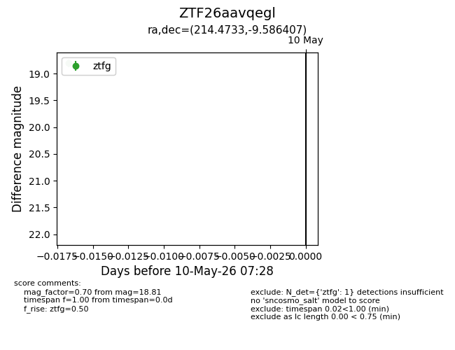
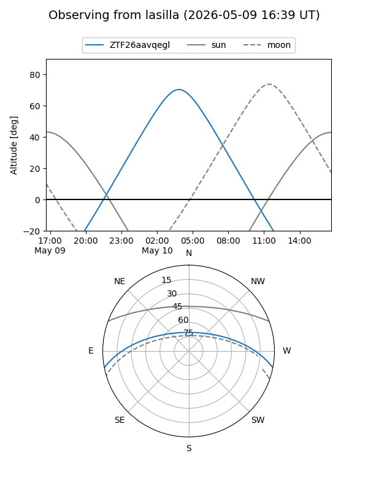
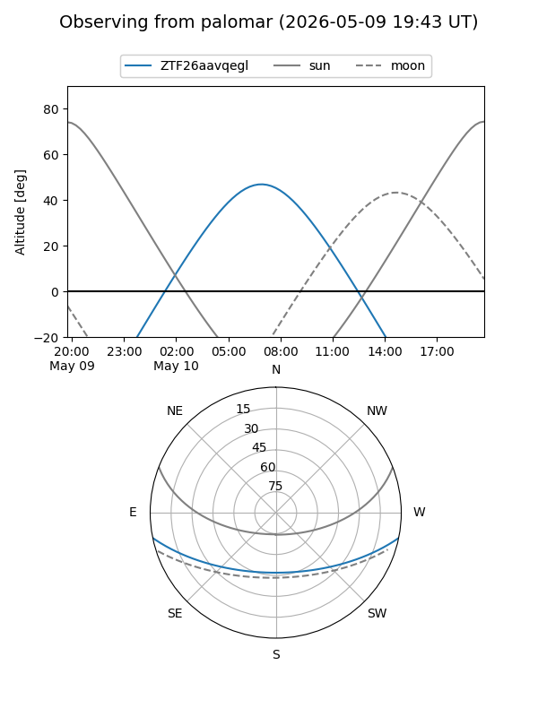

ZTF26aavqegl
Target ZTF26aavqegl at 2026-05-10 07:29
Aliases and brokers:
FINK: link
Lasair: link
ALeRCE: link
alt names
ZTF26aavqegl (ztf,fink_ztf)
Coordinates:
equatorial (ra, dec) = 214.4733,-9.58641
equatorial (HMS+DMS) = 14:17:53.60,-09:35:11.07
galactic (l, b) = (335.6105,+47.72454)
Flags:
Photometry:
last ztfg=18.81
1 ztfg detections
Lightcurve

Visibility


Additional plots